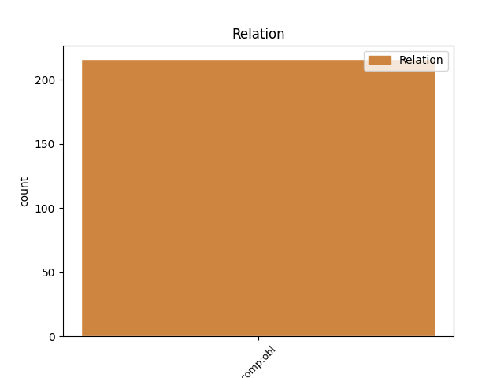
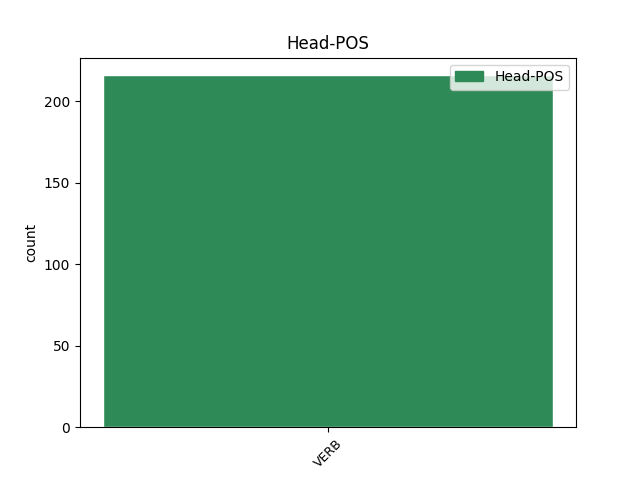
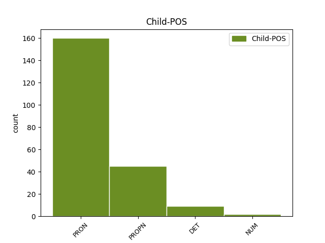

Distribution of features within this leaf



Agreement Rules sorted by frequency.
- When the dependent token is the oblique complements(comp:obl) of the head token, and the dependent token is PRON.
1 Práve _ _ _ _ 0 _ _ _
2 im on PRON PFmp3 Animacy=Anim|Case=Dat|Gender=Masc|Number=Plur|Person=3|PronType=Prs 3 comp:obl _ _
3 okazoval ukazovať VERB VLescm+:q Animacy=Anim|Aspect=Imp|Gender=Masc|Number=Sing|Polarity=Pos|Tense=Past|Typo=Yes|VerbForm=Part 0 _ _ _
4 svoju _ _ _ _ 0 _ _ _
5 trofej _ _ _ _ 0 _ _ _
6 . _ _ _ _ 0 _ _ _
1 “ _ _ _ _ 0 _ _ _
2 Ďakujem _ _ _ _ 0 _ _ _
3 , _ _ _ _ 0 _ _ _
4 “ _ _ _ _ 0 _ _ _
5 povedala _ _ _ _ 0 _ _ _
6 Makulienka _ _ _ _ 0 _ _ _
7 , _ _ _ _ 0 _ _ _
8 “ _ _ _ _ 0 _ _ _
9 ibaže _ _ _ _ 0 _ _ _
10 neviem _ _ _ _ 0 _ _ _
11 , _ _ _ _ 0 _ _ _
12 čo _ _ _ _ 0 _ _ _
13 mám _ _ _ _ 0 _ _ _
14 robiť _ _ _ _ 0 _ _ _
15 , _ _ _ _ 0 _ _ _
16 aby _ _ _ _ 0 _ _ _
17 drozd _ _ _ _ 0 _ _ _
18 vrátil vrátiť VERB VLdscm+ Animacy=Anim|Aspect=Perf|Gender=Masc|Number=Sing|Polarity=Pos|Tense=Past|VerbForm=Part 0 _ _ _
19 Emanuelovi emanuel PROPN SSms3:r Animacy=Anim|Case=Dat|Gender=Masc|Number=Sing 18 comp:obl _ _
20 cylinder _ _ _ _ 0 _ _ _
21 . _ _ _ _ 0 _ _ _
22 “ _ _ _ _ 0 _ _ _
1 Zlá _ _ _ _ 0 _ _ _
2 víla _ _ _ _ 0 _ _ _
3 vedela _ _ _ _ 0 _ _ _
4 , _ _ _ _ 0 _ _ _
5 že _ _ _ _ 0 _ _ _
6 iba _ _ _ _ 0 _ _ _
7 on _ _ _ _ 0 _ _ _
8 môže _ _ _ _ 0 _ _ _
9 zrušiť _ _ _ _ 0 _ _ _
10 kliatbu _ _ _ _ 0 _ _ _
11 , _ _ _ _ 0 _ _ _
12 ktorou ktorý DET PAfs7 Case=Ins|Gender=Fem|Number=Sing|PronType=Int,Rel 14 comp:obl _ _
13 Zorničku _ _ _ _ 0 _ _ _
14 zakliala zakliať VERB VLdscf+ Aspect=Perf|Gender=Fem|Number=Sing|Polarity=Pos|Tense=Past|VerbForm=Part 0 _ _ _
15 . _ _ _ _ 0 _ _ _
1 Dal dať VERB VLjscm+ Animacy=Anim|Aspect=Imp,Perf|Gender=Masc|Number=Sing|Polarity=Pos|Tense=Past|VerbForm=Part 0 _ _ _
2 jednému jeden NUM NFms3 Animacy=Anim|Case=Dat|Gender=Masc|Number=Sing 1 comp:obl _ _
3 zo _ _ _ _ 0 _ _ _
4 svojich _ _ _ _ 0 _ _ _
5 mužov _ _ _ _ 0 _ _ _
6 znamenie _ _ _ _ 0 _ _ _
7 . _ _ _ _ 0 _ _ _
Disagree Examples:
1 Stúpame _ _ _ _ 0 _ _ _
2 po _ _ _ _ 0 _ _ _
3 schodíkoch _ _ _ _ 0 _ _ _
4 , _ _ _ _ 0 _ _ _
5 ktoré _ _ _ _ 0 _ _ _
6 jej ona PRON PFfs3 Case=Dat|Gender=Fem|Number=Sing|Person=3|PronType=Prs 7 comp:obl _ _
7 dali dať VERB VLjpci+ Animacy=Inan|Aspect=Imp,Perf|Gender=Masc|Number=Plur|Polarity=Pos|Tense=Past|VerbForm=Part 0 _ _ _
8 meno _ _ _ _ 0 _ _ _
9 , _ _ _ _ 0 _ _ _
10 a _ _ _ _ 0 _ _ _
11 mierime _ _ _ _ 0 _ _ _
12 na _ _ _ _ 0 _ _ _
13 Karlovo _ _ _ _ 0 _ _ _
14 naměstí _ _ _ _ 0 _ _ _
15 . _ _ _ _ 0 _ _ _
1 S _ _ _ _ 0 _ _ _
2 hrdinským _ _ _ _ 0 _ _ _
3 úsmevom _ _ _ _ 0 _ _ _
4 povedala _ _ _ _ 0 _ _ _
5 , _ _ _ _ 0 _ _ _
6 že _ _ _ _ 0 _ _ _
7 uvíta _ _ _ _ 0 _ _ _
8 každú _ _ _ _ 0 _ _ _
9 kritickú _ _ _ _ 0 _ _ _
10 pripomienku _ _ _ _ 0 _ _ _
11 , _ _ _ _ 0 _ _ _
12 lebo _ _ _ _ 0 _ _ _
13 doteraz _ _ _ _ 0 _ _ _
14 jej ona PRON PFfs3 Case=Dat|Gender=Fem|Number=Sing|Person=3|PronType=Prs 18 comp:obl _ _
15 nikto _ _ _ _ 0 _ _ _
16 nič _ _ _ _ 0 _ _ _
17 konkrétne _ _ _ _ 0 _ _ _
18 nepovedal povedať VERB VLdscm- Animacy=Anim|Aspect=Perf|Gender=Masc|Number=Sing|Polarity=Neg|Tense=Past|VerbForm=Part 0 _ _ _
19 . _ _ _ _ 0 _ _ _
1 Po _ _ _ _ 0 _ _ _
2 rokom _ _ _ _ 0 _ _ _
3 1044 _ _ _ _ 0 _ _ _
4 sa _ _ _ _ 0 _ _ _
5 nachádza _ _ _ _ 0 _ _ _
6 správa _ _ _ _ 0 _ _ _
7 o _ _ _ _ 0 _ _ _
8 narodení _ _ _ _ 0 _ _ _
9 Vseslava _ _ _ _ 0 _ _ _
10 , _ _ _ _ 0 _ _ _
11 ktorému ktorý DET PAms3 Animacy=Anim|Case=Dat|Gender=Masc|Number=Sing|PronType=Int,Rel 16 comp:obl _ _
12 matka _ _ _ _ 0 _ _ _
13 na _ _ _ _ 0 _ _ _
14 radu _ _ _ _ 0 _ _ _
15 volchvov _ _ _ _ 0 _ _ _
16 uviazala uviazať VERB VLdscf+ Aspect=Perf|Gender=Fem|Number=Sing|Polarity=Pos|Tense=Past|VerbForm=Part 0 _ _ _
17 amulet _ _ _ _ 0 _ _ _
18 , _ _ _ _ 0 _ _ _
19 spôsobiaci _ _ _ _ 0 _ _ _
20 že _ _ _ _ 0 _ _ _
21 z _ _ _ _ 0 _ _ _
22 chlapca _ _ _ _ 0 _ _ _
23 vyrástol _ _ _ _ 0 _ _ _
24 krutý _ _ _ _ 0 _ _ _
25 a _ _ _ _ 0 _ _ _
26 nemilosrdný _ _ _ _ 0 _ _ _
27 človek _ _ _ _ 0 _ _ _
28 . _ _ _ _ 0 _ _ _
1 Stotožňovaná _ _ _ _ 0 _ _ _
2 s _ _ _ _ 0 _ _ _
3 Mokošou _ _ _ _ 0 _ _ _
4 ako _ _ _ _ 0 _ _ _
5 s _ _ _ _ 0 _ _ _
6 bohyňou _ _ _ _ 0 _ _ _
7 viacerých _ _ _ _ 0 _ _ _
8 funkcií _ _ _ _ 0 _ _ _
9 nadobúdala nadobúdať VERB VLescf+ Aspect=Imp|Gender=Fem|Number=Sing|Polarity=Pos|Tense=Past|VerbForm=Part 0 _ _ _
10 i _ _ _ _ 0 _ _ _
11 viacero viacero NUM NUns4 Case=Acc|Gender=Neut|Number=Sing 9 comp:obl _ _
12 podôb _ _ _ _ 0 _ _ _
13 . _ _ _ _ 0 _ _ _
1 V _ _ _ _ 0 _ _ _
2 nami _ _ _ _ 0 _ _ _
3 sledovanom _ _ _ _ 0 _ _ _
4 období _ _ _ _ 0 _ _ _
5 ho on PRON PFis4 Animacy=Inan|Case=Acc|Gender=Masc|Number=Sing|Person=3|PronType=Prs 6 comp:obl _ _
6 nemala mať VERB VLescf- Aspect=Imp|Gender=Fem|Number=Sing|Polarity=Neg|Tense=Past|VerbForm=Part 0 _ _ _
7 vôbec _ _ _ _ 0 _ _ _
8 , _ _ _ _ 0 _ _ _
9 žijúc _ _ _ _ 0 _ _ _
10 zo _ _ _ _ 0 _ _ _
11 spomenutého _ _ _ _ 0 _ _ _
12 desatinného _ _ _ _ 0 _ _ _
13 systému _ _ _ _ 0 _ _ _
14 dôb _ _ _ _ 0 _ _ _
15 pohanských _ _ _ _ 0 _ _ _
16 / _ _ _ _ 0 _ _ _
17 pozri _ _ _ _ 0 _ _ _
18 2 _ _ _ _ 0 _ _ _
19 kapitolu _ _ _ _ 0 _ _ _
20 druhej _ _ _ _ 0 _ _ _
21 časti _ _ _ _ 0 _ _ _
22 / _ _ _ _ 0 _ _ _
23 . _ _ _ _ 0 _ _ _